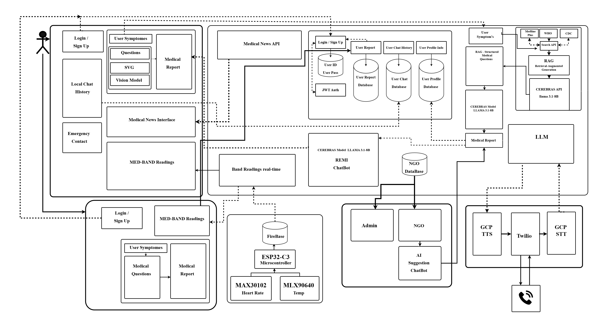

How It Actually Started
We didn't start with some big vision. We picked the problem statement — "Symptom Checker with Multilingual Chatbot for Basic Healthcare Guidance" — looked at each other, and went "okay, so... chatbot?" That was about the extent of our planning for the first few days.
The first real decision came when we sat down and asked: should the LLM be the main thing? And pretty quickly we realized — no. Letting an AI be the first point of contact for someone describing chest pain felt wrong. So we landed on a three-phase approach: structured questionnaire first, decision tree second, LLM chatbot last. The AI never runs cold. By the time it talks to the user, we already have 20+ data points about them.
Some weeks were productive. Some weeks nothing happened — exams, other commitments, or just being stuck on a problem we didn't know how to solve yet. That's how it actually went.
Why We Chose What We Chose
FastAPI, No ORM, Raw SQL
We needed async for concurrent LLM calls, auto-generated API docs (Gowtham needed Swagger to build the app against), and Pydantic validation. FastAPI hit all three. Django was too heavy for what we were doing.
The no-ORM choice raised a few eyebrows. We use PostgreSQL with JSONB columns everywhere — assessment answers, medical history, chat messages all go in as JSON. ORMs make JSONB queries clunky. We wanted to write data->>'symptoms' directly, not wrestle with an abstraction.
Cerebras Over OpenAI
This was purely about latency. In rural areas with spotty connectivity, if the LLM takes 2 seconds to respond, the user is already walking away. Cerebras runs llama3.1-8b on their wafer-scale engine — sub-300ms responses. That's 5-6x faster than GPT-4 for our use case. Cost was a bonus: ₹0.60 per million tokens vs ₹15 for GPT-4.
And since the API is OpenAI-compatible, switching later is a one-line config change. We're not locked in.
PostgreSQL JSONB Over MongoDB
We know the shape of our data — assessment sessions, user profiles, chat logs. It's semi-structured, not unstructured. PostgreSQL's JSONB gives us the document-store flexibility we need with proper joins, transactions, and aggregate queries on top. We didn't want to run a separate database just because some columns have variable schemas.
Designing the App — From Figma to KMP
Before writing a single line of Kotlin, Gowtham designed every screen in Figma — Home, Symptom Assessment (with its multiple sub-flows), Medical History, News feed, and the bottom navigation. Each frame maps 1:1 to a Compose screen in the KMP app. The design system uses a green-teal color palette with gradient accents, and every state — loading, empty, error — was mocked up before implementation. Having this as a reference meant the app looked polished from the start, not "developer UI that we'll fix later."
Things We Built, Broke, and Changed Our Minds About
Not everything we built made it to the final version. Some things we spent real time on and had to let go. That's just how it goes.
The Pivots
Stuff we invested time in and eventually replaced or dropped:
🔄 LLaVA → Gemini Vision
We spent about a week trying to run LLaVA locally for image-based symptom assessment — rashes, wounds, skin conditions. The model worked but it was 7GB and needed a GPU. On a kiosk? Not practical. We swapped it for Gemini 2.5 Flash via API. Faster, cheaper, no GPU headaches. The old LLaVA code is still sitting in llava_client.py as a monument to that week.
🔄 Node.js Voice Agent → Python Rewrite
The original Twilio voice integration was in Node.js. It worked fine in isolation, but running two runtimes — Python backend + Node voice server — made Docker and deployment a mess. We rewrote the whole thing in Python. Same features, one container, one language.
🔄 Bhashini API → Twilio TTS/STT
We tried Bhashini for Indian language translation. Timeouts, inconsistent output for medical terminology. It wasn't reliable enough. We fell back to Twilio's built-in speech recognition and text-to-speech with language-specific voices. Not perfect, but it works consistently.
✦ RAG Pipeline — Rebuilt and Kept
This almost got cut. Version 1 was "search Tavily, dump everything into the LLM." The answers were useless. Roshan rebuilt it with a proper retrieval pipeline: Tavily searches medical databases, BM25 + sentence-transformers rank the results, and only the top-k passages get fed to Cerebras. Now it handles symptoms the decision tree doesn't cover — which is the whole point of having it.
✦ The is_compulsory Field — Small but Important
A simple boolean on each questionnaire question. If it's not compulsory, the app auto-fills it from the user's profile (name, age, gender, allergies). If it is, the user has to answer manually. Returning users skip about 60% of the intake. On a kiosk where someone might be in pain and running out of patience, this matters a lot.
Mapping the Human Body in SVG
One of the most unique parts of Cura's kiosk interface is the interactive body map. Instead of asking users to type where it hurts, we let them tap on the body. Gowtham designed a full SVG model in Figma — every body region is its own named layer: body_region_chest, body_region_left_thigh, body_region_upper_abdomen, and so on. Each region is a separate SVG path that can be individually highlighted, tapped, and mapped to symptoms. When a user taps a region, the system knows exactly which body part they're pointing at and pulls up the relevant symptom questions. No typing, no medical jargon — just point where it hurts.
The Full Architecture — How Everything Connects

Roshan mapped out the entire system architecture in Draw.io — and this is what Cura actually looks like under the hood. On the left, the mobile app and kiosk handle user-facing flows: login, symptom questions, SVG body mapping, vision model uploads, and medical reports. Everything routes through the FastAPI backend, which manages JWT auth, user profiles, chat history, and reports across PostgreSQL databases. The RAG pipeline pulls structured medical questions from WHO, CDC, and MedlinePlus via Tavily search. The Cerebras LLM (Llama 3.1-8B) powers both the assessment report generation and the REMI chatbot. On the IoT side, the ESP32-C3 microcontroller reads heart rate (MAX30102) and temperature (MLX90640) from the MED-BAND, pushing real-time data through Firebase. The admin and NGO dashboards connect to the same backend, and Twilio handles multilingual voice calls with GCP's text-to-speech and speech-to-text. One diagram, every moving part.
The Stuff That Was Harder Than Expected
People Describe Symptoms in Infinite Ways
We started with 5 keywords per symptom. Now it's 30+. "Chest pain," "my heart hurts," "tightness in my chest," "something feels wrong here" — users never describe things the way medical textbooks do. We added fuzzy matching with rapidfuzz as a fallback. It catches most things. Most.
LLM Said "Apply Turmeric" for a Cardiac Event
That actually happened during testing. The LLM suggested a home remedy for something that could've been a heart attack. We added three layers after that: strict system prompts, post-processing filters for red-flag phrases, and a mandatory "always consult a doctor" disclaimer on every single response. The LLM is a guide, never a doctor.
Session State Was a Nightmare
A user starts the questionnaire, drops off at question 14, comes back 2 hours later. They shouldn't have to restart. We store the full session in PostgreSQL with a 24-hour TTL. Sounds simple — but the session spans three phases (questionnaire → decision tree → chatbot) with completely different data shapes. It took three rewrites.
Voice in 3 Languages
Making Remy speak Hindi wasn't just translation — it's a different way of describing symptoms, different medical vocabulary, different conversational flow. Each language gets its own system prompt, TTS voice, and example conversations. Marathi was the hardest because Twilio's voice options for it are still limited.
Getting It to Actually Run Somewhere
Local development and production deployment are two very different experiences.
The Docker Diet
First Docker image was 1.2 GB. It had build tools, compilers, debug utilities — the works. Multi-stage builds brought that down to 380 MB: one stage compiles everything, the runtime stage only copies the installed packages. We also built a separate EC2-optimized Dockerfile for deployments that don't need GPU libraries.
AWS Fargate
We went with ECS Fargate — serverless containers, no EC2 instances to babysit, auto-scaling if traffic spikes. The task definition has health checks, CloudWatch logging, and environment variables for all the API keys. For organizations that prefer self-hosting, there's a full EC2 setup script too.
Looking Back
- Structure before AI. Questionnaires and decision trees beat raw LLM calls for medical triage. Every time.
- Kill things that aren't working. LLaVA, Node.js voice agent, Bhashini — all got replaced. The project got better each time.
- Latency matters more than model size. 300ms vs 2 seconds isn't a benchmark — it's whether someone on a 2G connection actually gets an answer.
- Build for the worst-case user. Can't read? Voice. Can't type? Auto-fill. Dropped off mid-session? Resume where you left off.
- Talk to the people it's for. NGO partnerships gave us real feedback that no amount of internal testing would have surfaced.
The Full Stack
| Layer | Technology | Why |
|---|---|---|
| Backend | FastAPI + Uvicorn | Async, auto-docs, Pydantic |
| LLM | Cerebras llama3.1-8b | Sub-300ms, cost-effective |
| Vision | Gemini 2.5 Flash | Replaced LLaVA — no GPU needed |
| RAG | Tavily + BM25 + sentence-transformers | Hybrid retrieval for unknown symptoms |
| Database | PostgreSQL + JSONB | SQL + document flexibility |
| Voice | Twilio (EN/HI/MR) | Phone access for non-smartphone users |
| Mobile App | Kotlin Multiplatform | iOS + Android from one codebase |
| Deployment | Docker → AWS ECS Fargate | Serverless, auto-scaling |